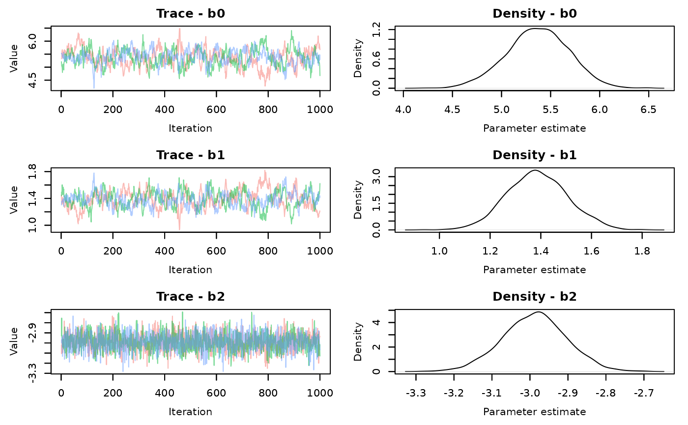
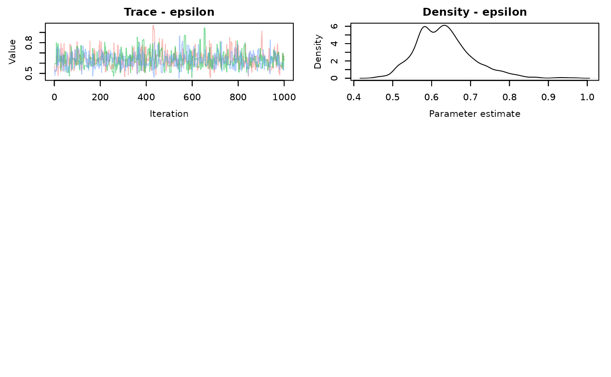
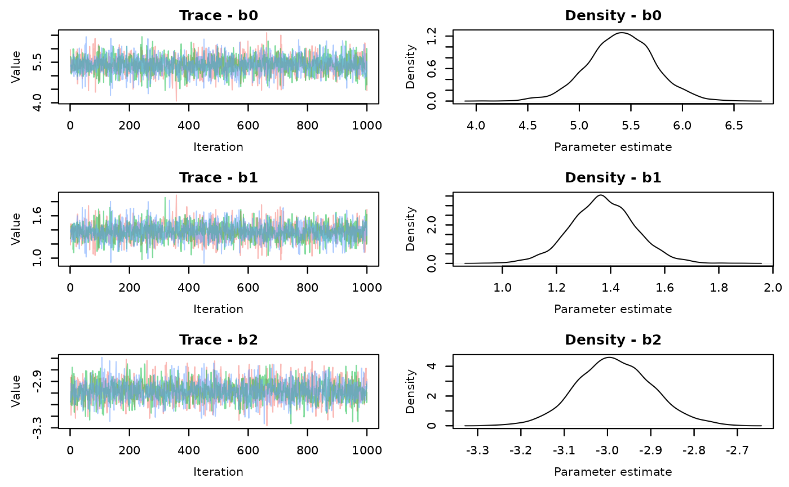
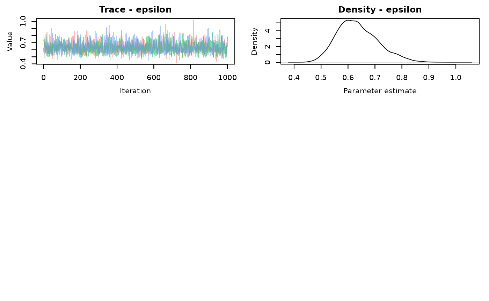

Introduction
This is just a short demonstration on executing MCMC estimation of a Bayesian model in Nimble. This is largely also covered in the Nimble user manual. Specifically, this walks through executing Nimble “the long way” because of several benefits. It lets you check your initial values before compiling to avoid the Nimble equivalent of JAGS’s “Node inconsistent with parents” or other errors and lets you customize the samplers for individual or sets of parameters.
Nimble vs. JAGS
Part of what makes Nimble more attractive, compared to JAGS, is the speed with which it samples. Some of the speed comes from some computer-background-blackbox stuff that, unless you want to do a deep dive into programming, doesn’t matter (compiling,running in C++). That adds an extra step in getting your model to run. This is part of what makes Nimble more efficient. The other part comes from the type of samplers (the algorithm used to perform MCMC estimation) you can specify.
JAGS generally limits your ability to specify samplers for model parameters. It’s sometimes better this way, but not always. For example, if you have a linear model with many regression coefficients, you may find that JAGS samples very slowly and the resulting chains mix poorly. That is probably because the default sampler (which you can’t change) is a slice sampler. It works on each regression coefficient individually, trying to sample one coefficient at a time. Slice sampling like this can be slow, but often results in chains with more independent samples/ lower autocorrelation.
Nimble provides default samplers, but lets you adjust them as you like. The default sampler in Nimble for most parameters (or at least continuous value ones, like regression coefficients) is a random-walk (Metropolis-Hastings) sampler. It’s very quick, but tends to lead to chains with greater autocorrelation than a slice sampler, so you need to run longer chains to achieve similar effective sample sizes. However, Nimble lets you specify block samplers. This means that, rather than sampling regression coefficients individually, you can sample them together. This tends to be slower, but results in less autocorrelation and improved mixing.
Running Nimble
We’ll walk through an example below using simulated data. One real nice thing about Nimble is that it uses the BUGS programming language to write a model so any older models from JAGS should be able to be used in Nimble (there are even functions to do that).
Next, write the model in BUGS that we’ll use to estimate parameters
library(nimble)
#> nimble version 1.4.0 is loaded.
#> For more information on NIMBLE and a User Manual,
#> please visit https://R-nimble.org.
#>
#> Attaching package: 'nimble'
#> The following object is masked from 'package:stats':
#>
#> simulate
#> The following object is masked from 'package:base':
#>
#> declare
demo.code<-nimbleCode({
#priors
b0~dnorm(0,sd=100)
b1~dnorm(0,sd=100)
b2~dnorm(0,sd=100)
epsilon~dunif(0,10) # residual variance
#model
for (i in 1:n){
mu[i]<-b0+b1*x1[i]+b2*x2[i]
y[i]~dnorm(mu[i],sd=epsilon)
}
})You may have already noticed, but another thing you can do in Nimble is specify priors using a standard deviation instead of precision. If you don’t include sd= in the distribution, Nimble will assume it’s precision, so be sure you specify that part of your prior distribution carefully.
Next, prepare the data. For data, Nimble is different from JAGS in that it makes a distinction between constants and data. Data are exclusively quantities that come from stochastic nodes. In our model above, the only data we are supplying is the observed outcomes \(y_i\). The covariates we measured \(x_{1i},x_{2i}\) get supplied as constants. Any variable we want to use for indexing (n above, in the for loop) is also a constant.
set.seed(12345)
demo.dat<-sim.dat(40)
nim.dat<-list(y=demo.dat$y)
nim.const<-list(n=length(demo.dat$x2),
x1=demo.dat$x1,
x2=demo.dat$x2)
nim.inits<-function(){list(
#epsilon=runif(1,-5,0),
b0=rnorm(1,0,1),
b1=rnorm(1,0,1),
b2=rnorm(1,0,1)
)}Now we also set up the functions to generate initial values for each MCMC chain. It’s better (but not always essential) to have initial values provided via a function to ensure that the chains all don’t start from the same value. It’s not always critical to provide initial values if the model mixes well, but in the event mixing is poor, starting chains from different parameter values can help ensure MCMC is searching the widest range of potential values possible (sampling from the full parameter space). The above initial value has epsilon commented out to facilitate demonstration of some other aspects of Nimble later on.
Now you bundle the data, code, constants, and initial values together in what we’ll call a model object
demo.mod<-nimbleModel(code=demo.code,
data=nim.dat,
constants = nim.const,
inits=nim.inits()) # remember the () for the initial values function!
#> Defining model
#> Building model
#> Setting data and initial values
#> Running calculate on model
#> [Note] Any error reports that follow may simply reflect missing values in model variables.
#> Checking model sizes and dimensions
#> [Note] This model is not fully initialized. This is not an error.
#> To see which variables are not initialized, use model$initializeInfo().
#> For more information on model initialization, see help(modelInitialization).You should see a message about the model not being fully initialized. This usually means there is a parameter you can provide an initial value for, but did not. In this case it’s epsilon, the residual variance. This is where the first useful tool in Nimble comes in. Before you even start trying to sample, you can get a sense of if the model will run properly.
The message tells you to use model$initializeInfo(). This should tell you that you have nodes without initial values.
demo.mod$initializeInfo()
#> [Note] Missing values (NAs) or non-finite values were found in model variables: epsilon.
#> [Note] This is not an error, but some or all variables may need to be initialized for certain algorithms to operate properly.
#> [Note] For more information on model initialization, see help(modelInitialization).
demo.mod$calculate()
#> [1] NA
demo.mod$calculate('epsilon')
#> [1] NAIt’s not always fatal, but it’s a good practice to try and provide initial values. the second command $calculate() tries to calculate the log probability density of the model from initial values. In hierarchical models, an NA here will mean your model probably won’t run, but with simpler models, we can try. You can also check particular nodes to see which are giving you trouble.
We know from intializeInfo() that the NA is because we didn’t provide a value for \(epsilon\) in the initial values. Sometimes though, you will still get an NA even if you have provided a starting value. If that happens, you’ll need to check individual nodes to determine which are giving you trouble and make adjustments to the prior, initial value, or both. This may require overwriting (re-run) the nimbleCode and/or nimbleModel objects repeatedly.
Just for the sake of demonstration, we’ll fix our above issue by providing an intial value for epsilon
nim.inits<-function(){list(
epsilon=runif(1,0.001,5),
b0=rnorm(1,0,1),
b1=rnorm(1,0,1),
b2=rnorm(1,0,1)
)}
demo.mod<-nimbleModel(code=demo.code,
data=nim.dat,
constants = nim.const,
inits=nim.inits())
#> Defining model
#> Building model
#> Setting data and initial values
#> Running calculate on model
#> [Note] Any error reports that follow may simply reflect missing values in model variables.
#> Checking model sizes and dimensions
demo.mod$initializeInfo()
#> [Note] All model variables are initialized.
demo.mod$calculate()
#> [1] -211.9384
demo.mod$calculate('epsilon')
#> [1] -2.302585Once you sort out the initial values and create the model object, you configure the MCMC sampler.
demo.config<-configureMCMC(demo.mod)
#> ===== Monitors =====
#> thin = 1: b0, b1, b2, epsilon
#> ===== Samplers =====
#> RW sampler (1)
#> - epsilon
#> conjugate sampler (3)
#> - b0
#> - b1
#> - b2
demo.config
#> ===== Monitors =====
#> thin = 1: b0, b1, b2, epsilon
#> ===== Samplers =====
#> RW sampler (1)
#> - epsilon
#> conjugate sampler (3)
#> - b0
#> - b1
#> - b2Nimble should automatically print what nodes are monitored and what the assigned samplers are when you execute configureMCMC but if you call the object, it will appear again.
In this case, the conjugate sampler is assigned to the regression coefficients because the prior and the likelihood (the distribution of the observation) are the same (normal). If this were a glm, they wouldn’t be conjugate because the likelihood would possibly be Poisson, logit, or another distribution. They would be a random walk sampler, like epsilon. Conjugate samplers are are a default and might not be the best but do generally perform well.
Now though, is where you would want to adjust samplers. To do so, we will set up a second configuration to use later on, rather than bouncing back and forth. Here, we set the sampler for the residual variance to be a slice sampler. And set the regression coefficients (b0, b1, b2) to use an automated factor slice sampler, AF_slice. This is is a form of block sampler. There is also a RW_block sampler, but the former often performs better. Again, blocking parameters just means these parameters are sampled together, rather than individually. In practice, it most likely is most applicable to use for regression coefficients, but it’s something you can play around with. It is a slice sampler, so it will only work for parameters that are numerical, not categorical or binary.
You can see the list of possible samplers and a brief explanation here
demo.config.alt<-configureMCMC(demo.mod)
#> ===== Monitors =====
#> thin = 1: b0, b1, b2, epsilon
#> ===== Samplers =====
#> RW sampler (1)
#> - epsilon
#> conjugate sampler (3)
#> - b0
#> - b1
#> - b2
demo.config.alt$replaceSamplers(target='epsilon',
type='slice')
demo.config.alt$replaceSamplers(target=c('b0','b1','b2'),
type='AF_slice')
demo.config
#> ===== Monitors =====
#> thin = 1: b0, b1, b2, epsilon
#> ===== Samplers =====
#> RW sampler (1)
#> - epsilon
#> conjugate sampler (3)
#> - b0
#> - b1
#> - b2
demo.config.alt
#> ===== Monitors =====
#> thin = 1: b0, b1, b2, epsilon
#> ===== Samplers =====
#> slice sampler (1)
#> - epsilon
#> AF_slice sampler (1)
#> - b0, b1, b2
# A third sampler configuration could be having each parameter be a slice sampler and sampled independently (targetByNode=TRUE).
# This should be slower than RW or conjugate samplers, but have better mixing. It will be slower than the AF_slice sampler.
#### not run
#
# demo.config.alt$replaceSamplers(target=c('b0','b1','b2','epsilon'),
# type='slice',
# targetByNode=TRUE)Nimble converts your model, data, and MCMC algorithms to C++ which makes them run faster when it’s sampling. There is an added cost though, that you need to build an MCMC sampler object and compile the model first. It takes time but just involves running 3 simple commands. 1.) buildMCMC using the configuration object, leading to an MCMC object 2.) compileNimble using the model object, leading to a compiled model 3.) compileNimble using the compiled model and the MCMC object you just created
We will do it twice to ensure we have everything we need to compare the RW sampler to the slice sampler.
#----------- RW sampler on epsilon---------------------------
demo.build<-nimble::buildMCMC(demo.config) # build MCMC
demo.comp.mod<-nimble::compileNimble(demo.mod) #first compile step
demo.comp.mcmc<-nimble::compileNimble(demo.build, project=demo.comp.mod) # second compile step
#----------- Slice sampler on epsilon
alt.build<-nimble::buildMCMC(demo.config.alt) # build MCMC
alt.comp.mod<-nimble::compileNimble(demo.mod) #first compile step
alt.comp.mcmc<-nimble::compileNimble(alt.build, project=alt.comp.mod) # second compile stepNow you can execute the the model and obtain your MCMC samples. This is where you set your iterations, burning, chains, and thinning. We can use the MCMCvis to review summary statistics and view traceplots. We also use calls of Sys.time() to also track how long each sampler configuration runs.
#-----------RW samplers
RW.start<-Sys.time()
demo.samples<-nimble::runMCMC(demo.comp.mcmc,
niter=2000,
nburnin = 1000,
nchains = 3)
RW.end<-Sys.time()
RW.time<-RW.end-RW.start
#------------slice sampler
slice.start<-Sys.time()
alt.samples<-nimble::runMCMC(alt.comp.mcmc,
niter=2000,
nburnin = 1000,
nchains = 3)
slice.end<-Sys.time()
slice.time<-slice.end-slice.startLook at the traceplots of each
MCMCvis::MCMCtrace(demo.samples,pdf=FALSE)
MCMCvis::MCMCtrace(alt.samples,pdf=FALSE)
There is better mixing for the slice sampling. Check the summary statistics
MCMCvis::MCMCsummary(demo.samples)->RW.summary
RW.summary
#> mean sd 2.5% 50% 97.5% Rhat n.eff
#> b0 5.3688498 0.31668017 4.7181530 5.3740203 5.9720205 1.02 167
#> b1 1.3864821 0.12001356 1.1585818 1.3836834 1.6237416 1.02 165
#> b2 -2.9880842 0.08505345 -3.1549402 -2.9864336 -2.8260734 1.00 1308
#> epsilon 0.6318047 0.07263246 0.5129054 0.6259802 0.7989728 1.00 798
MCMCvis::MCMCsummary(alt.samples)->slice.summary
slice.summary
#> mean sd 2.5% 50% 97.5% Rhat n.eff
#> b0 5.4075780 0.32059372 4.7680382 5.410258 6.0419999 1.00 3240
#> b1 1.3725860 0.12049228 1.1322053 1.370473 1.6079879 1.00 3000
#> b2 -2.9830657 0.08727785 -3.1532691 -2.985470 -2.8062216 1.01 2718
#> epsilon 0.6368656 0.07732851 0.5076331 0.628372 0.8070473 1.00 2305The effective sample size for each parameter is much larger using the slice AF_slice sampler. There is a time difference, with the slice sampler taking 0.55 seconds compared to the default samplers of 0.28 seconds. It’s not a large difference in this simple model, but that’s about 2 times longer. That will scale up when your models start taking longer to run.
There isn’t a clear answer about what samplers are ultimately better. It could be the case that running the default samplers for more iterations is quicker than using a block or slice sampler. Or, default samplers may not converge or mix properly, regardless of how long you run them. This will just be something you end up playing around with and testing.